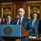
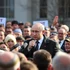
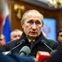
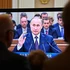
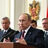
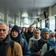
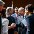
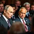
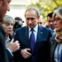

01.webp02.webp03.webp04.webp05.webp06.webp06_1.webp
06_2.webp
06_3.webp
06_4.webp

07.webp
До «Итогов года» (ежегодная пресс-конференция в декабре)07_1.webp

На «Итогах года» 2026 (в декабре)07_2.webp
07_3.webp
08.webp08_1.webp

Да, но в другой месяц08_2.webp
08_3.webp
08_4.webp
09.webp09_1.webp
09_2.webp

Не упомянет ИИ09_3.webp
10.webp10_1.webp
10_2.webp

Социальная сфера10_3.webp

Международные отношения10_4.webp
11.webp11_1.webp

5–15 раз11_2.webp

16–30 раз11_3.webp
11_4.webp